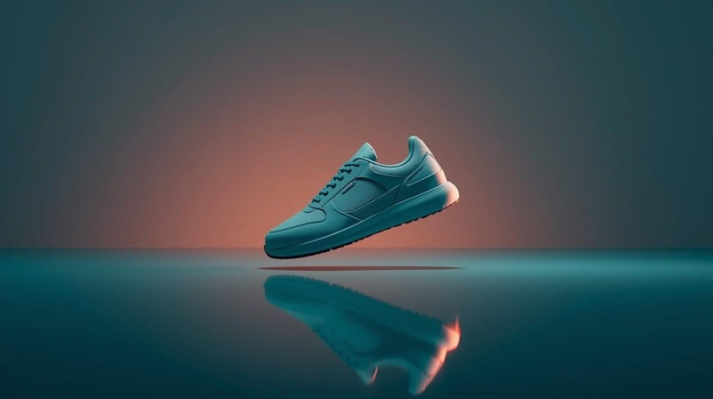

KakoBuy Shoes: The Complete Guide to Finding the Right Pair (2026)

Why Shoes Deserve Their Own Strategy
KakoBuy shoes are the most popular category — and the easiest to get wrong. Sizing mistakes, weight surprises, and QC oversights are disproportionately common with footwear. A dedicated shoe strategy in your spreadsheet is not optional.
The Shoe QC Protocol
Always request: insole measurement with ruler in cm, toe box shape from above, heel alignment from behind, sole profile, logo close-up, and size tag. Compare your target insole measurement (foot length + 0.5-1cm) against the QC photo measurement. Never approve a pair that does not match within 0.3cm.
The Box Decision
Shoeboxes add 200-400g per pair. For a 3-pair haul, removing boxes can save 600-1200g — that is ¥90-180 in shipping at ¥150/kg. Evaluate per pair: valuable or limited boxes are worth keeping; standard boxes usually are not.
Frequently Asked Questions
Measure your foot in cm (trace on paper, measure longest point, add 0.5-1cm). Use this measurement — not EU/US size — as your target. Request insole measurement QC photos and compare.
Sneakers: 800-1400g. Boots: 1500g+. Slides/sandals: 400-700g. Box adds 200-400g. Track estimates in your spreadsheet.